PUWEI WU / Installations
Installations裝置／現地創作
15 WORKS / PROJECTS
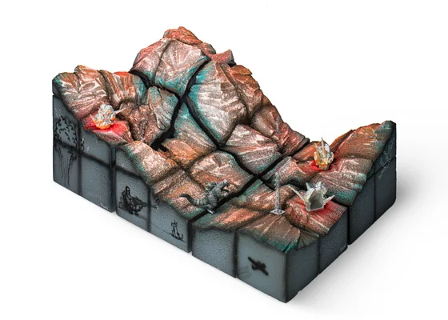
電塔山景
2026A Mountain Wired
怪獸繁榮 / Kaiju Boom
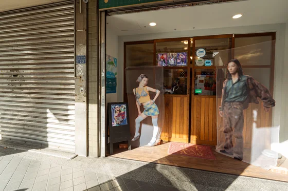
混血青年
2025Hybrid Youths
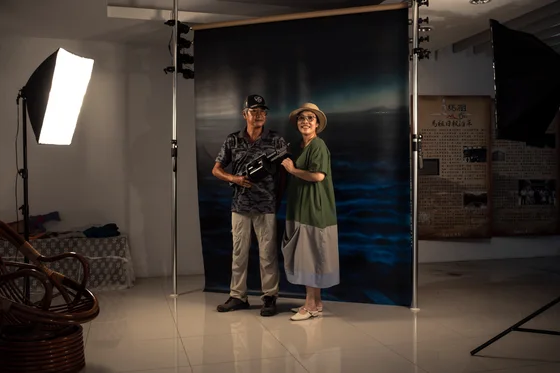
行吧行吧，依哥依爸
2025Go Go Brother, Go Go Father
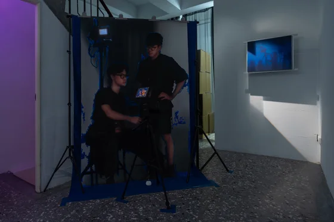
藍幕劇組
2025Chroma Set
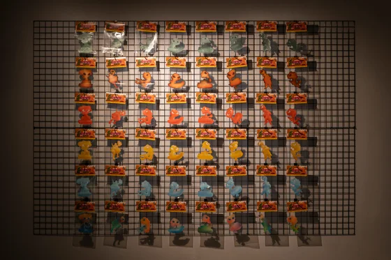
怪獣の進撃
2025Kaiju on the March
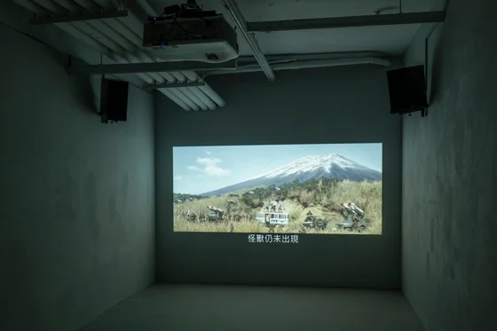
怪獸早已出現
2025The Kaiju have already appeared
怪獸繁榮 / Kaiju Boom
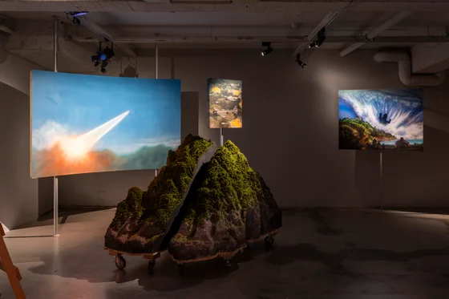
片廠佈景
2025Matte Paintings and Miniature Sets
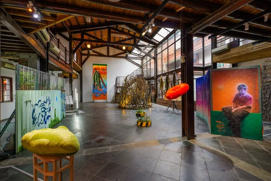
青青的睡去
2024Hit the Herb
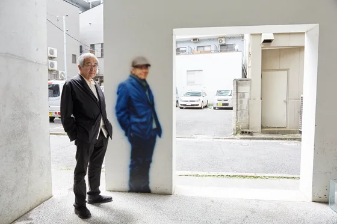
是什麼使今天的黃金町如此不同，如此充滿魅力？
2024Just What is It That Makes Today’s Koganecho So Different, So Appealing?
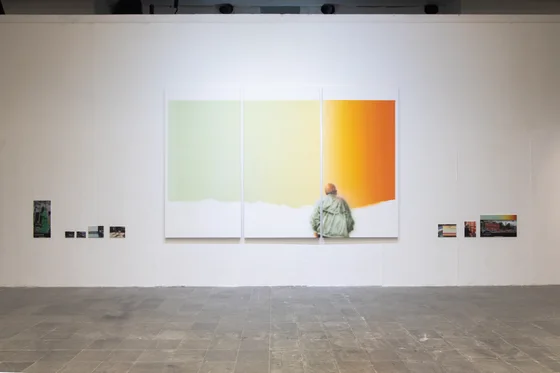
李神到厚櫃間的________拷貝
2023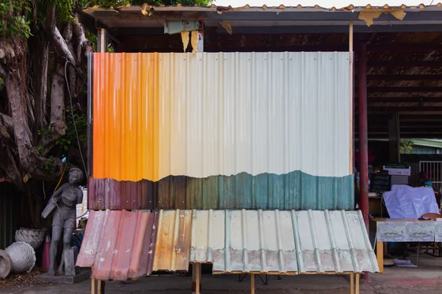
李神到厚櫃間的________
2023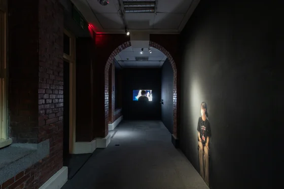
顯視錯誤：404
2023vision404
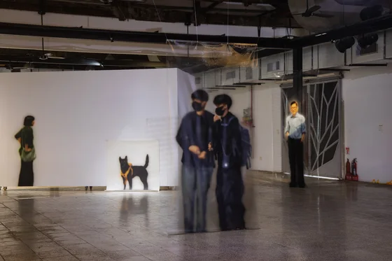
看他一臉扁平
2023He Looks SUPERFLAT.
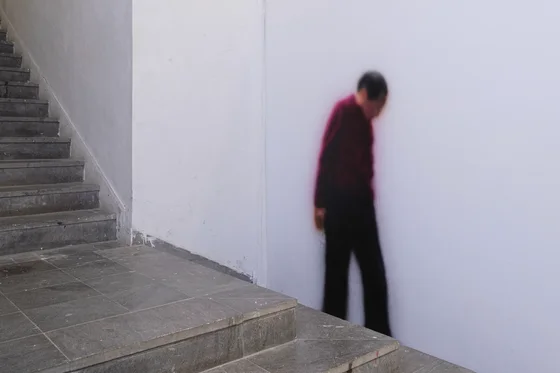
茫茫
2023bông-bông
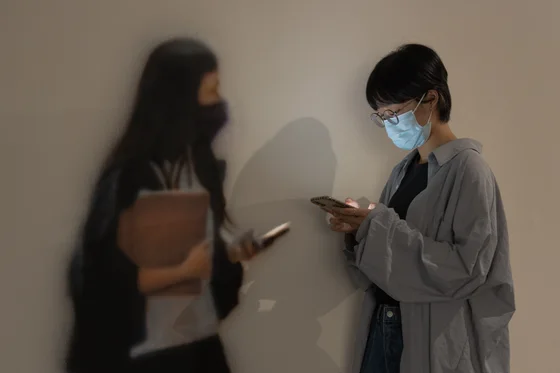
走著瞧！
2022Look over There!